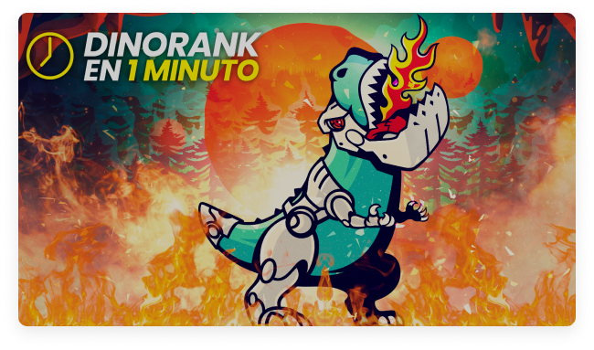

Consigue mayor visibilidad en Google, atrae más tráfico cualificado y aumenta tus ingresos con DinoRANK
Si quieres mejorar el SEO, posicionar tu contenido y saber qué hace tu competencia, necesitas una plataforma potente, intuitiva y que no te duela pagar.
Empieza AhoraUna única herramienta
DinoRANK es una suite SEO todo en uno pensada para que no necesites más.
Creada por SEOs
La potencia de una herramienta SEO profesional pensada para todos.
Software SEO accesible
Demostramos que las herramientas SEO no tienen porque ser caras.

Dinorank es una herramienta SEO creada por SEOs que ayuda a escalar posiciones en Google a profesionales y empresas
No importa si eres un pequeño emprendedor, una gran agencia, un SEO nichero de raza, un consultor SEO profesional o un redactor de contenidos.
¿Por qué?
Porque sabemos que el SEO es difícil y técnico y, sobre todo al principio, se hace un poco bola.
Conseguir visibilidad en Google cuesta mucho tiempo y dinero, y las herramientas SEO que hay en el mercado no ayudan porque son complicadas de usar y son caras.
DinoRANK es todo lo contrario.
Es una suite todo en uno muy fácil de entender y utilizar. Tiene tutoriales en cada sección, es muy visual y no te duele en el bolsillo cada mes.
Otras herramientas SEO te dan mucha información que no vas a utilizar nunca y además vas a terminar saturado de todo lo que ofrecen, que no es sencillo de aprender y dominar. Y, sobre todo, que no necesitas.
Para que te hagas una idea, hay herramientas que cobran 40€ al mes (casi el doble que DinoRANK) solo por una de las funcionalidades que DinoRANK incluye. Y esto lo puedes comprobar tu mismo buscando en Google.
Por eso, es más práctico que la herramienta SEO que tú elijas te ofrezca las funcionalidades que necesitas, sea sencilla de manejar y no te cobre por cosas que no vas a usar jamás.
¿Quieres saber más sobre DinoRANK?Hacemos el SEO universal
DinoRANK nace con la idea de democratizar el SEO
Relación calidad precio salvaje
Una herramienta de élite pero no solo para las élites
Haz SEO con pocos clicks
Fácil de usar y de exprimir con tutoriales en cada sección
Te presentamos las funciones de DinoRANK
Conoce exactamente cómo te puede ayudar la herramienta.
Tracking de posiciones: controla la evolución de tus keywords y de las de tu competencia
Monitoriza en todo momento la posición real de tus palabras clave en Google.
Tracker de posiciones geolocalizado, tanto mobile como Pc, fluctuaciones de SERPs y posibilidad de tracking por cluster o grupos de palabras clave.

Auditoría SEO: limpia los errores SEO de tu web rápidamente
Audita tus webs o las de tus clientes con pocos clicks.
Convierte el complejo proceso de auditoría SEO en algo rápido y sencillo. Páginas 404, redirecciones 301, posts mal optimizados... todo a golpe de click.

Prominencia semántica: lleva tu marketing de contenidos a otro nivel
Conoce qué keywords usar, su disposición y la cantidad de veces que debe aparecer en tu contenido en base a los términos que usa tu competencia.
Si eres redactores o copywriter y quieres obtener visibilidad en Google, es imprescindible para ti.

Keyword research: encuentra las mejores palabras clave
Descubre todas las palabras clave que tu usuario busca en Google y atrae tráfico cualificado a tu web.
Keyword research con búsquedas por país, tendencia de la keyword y una enorme base de datos de palabras clave a tu disposición.

Pagerank interno: distribuye bien la fuerza SEO de tu página
Aprende a distribuir la fuerza interna de tu web de la forma óptima para posicionar en Google lo que tú quieras.
Aprende a manejar la autoridad o link juice y dile a Google en todo momento qué es lo que debe posicionar en tu web.

Enlazado interno: nunca antes habías visto de manera visual cómo está enlazada tu web
Radiografía tu arquitectura web, o la de tu competencia, con el mapa de enlaces internos.
Observa "cómo es una página por dentro a ojos de Google" y mejora su estructura interna con esta función.

Canibalizaciones: aprende a resolverlas de forma sencilla
Deja tu web limpia de canibalizaciones que perjudican el posicionamiento de tus textos.
Encuentra todas tus canibalizaciones de forma precisa con DinoRANK y mejora el ranking de tus contenidos.

Visibilidad: descubre las keywords que posiciona tu competencia
Tus rivales ya no tendrán secretos para ti.
Obtén una gráfica de visibilidad y un listado de las palabras clave que ya está posicionando tu competencia para adelantarlos en Google.

Thin content: detecta las URLs sin tráfico de tu site
Encuentra rápido el contenido que a Google "no le gusta" de tu página.
Una vez lo detectes podrás trabajar sobre él, mejorándolo o eliminándolo y así aumentar el tráfico que es capaz de captar.

Gestión de enlazado externo: controla todos tus enlaces o backlinks
Anota todos los enlaces que apuntan hacia tu sitio web para controlar tu estrategia de link building.
Obtén estadísticas de tus enlaces entrantes, perfil de anchor text y además la herramienta te avisa si alguien te retira un enlace.
115.000 keywords trackeadas
Son más que la cantidad máxima de abejas que tiene una colmena
34 millones de URLs almacenadas activas
Esto es la misma cantidad de personas que se conectan a Internet desde el móvil en España
5.000 dominios activos
Esto es cerca del doble que las estrellas visibles en el cielo nocturno
Esto es lo que opina de DinoRANK la plana mayor del SEO
Esto es lo que dicen algunos de los profesionales más reputados del mundo del SEO sobre DinoRANK.

Alvaro Peña
Co-CEO de iSocialWeb
“Pocas herramientas dan más por menos. Una excelente herramienta all in one.”

Alex Navarro
Leyenda SEO desde 2003
“DinoRANK es una herramienta creada por grandes profesionales en activo del mundo SEO.”

Esteva Castells
Global SEO Manager en Adevinta
“DinoRANK acerca los datos de rastreo e indexación a cualquier público, democratiza el SEO.”

Juan González
CEO de Useo
“Sencilla y completa que simplifica el trabajo de SEO. Su WDF*DF es la más útil del mercado.”

Marquez
CEO de Prensarank
“La verdad es que DinoRANK me ha sorprendido, sobre todo su modulo de enlazado interno.”

Jesús Madurga
CEO de NeoAttack
“Llevamos todo el tracking de posiciones de nuestros clientes con DinoRANK, es imprescindible.”

Madre Seoperiora
CEO en Oorganika
“Cuenta con funcionalidades avanzadas pero explicadas de forma que todos pueden entender.”

Mijael
SEO nichero Amazon afiliados
“La relación calidad/precio que consigues con DinoRANK no la consigas con ninguna otra.”

Borja Aranda
Consultor SEO freelance
“DinoRANK es sin duda la herramienta All In One más versátil y económica del mercado.”

Raúl Aránega
CEO en APPYWEB y LinkContentPro
“Herramienta ágil que simplifica mucho el trabajo diario que hacemos todos los SEOs.”

Jose Lab
Consultor SEO freelance
“Me ha sorprendido su versatilidad, tenerlo todo en una sola suite es genial. Es muy intuitiva.”

Iván Larizgoitia
CEO de Dosmedia
“Me parece increíble todo lo que ofrece DinoRANK por ese precio. Está a otro nivel.”

Luis Revuelto
Consultor SEO freelance
“Práctica, intuitiva, sin fuegos artificiales. Únicamente las funcionalidades imprescindibles.”

Lucía y el SEO
Consultora SEO freelance
“Lo que más me gusta de DinoRANKes que me ayuda a mejorar el enlazado interno de mi web.”

Clara Soteras
SEO en la TV pública catalana
“Te permite llevar el SEO de tu proyecto al completo y está pensado para principiantes y expertos.”

Andres Kloster
CEO de Agencia Eleven
“Hemos usado DinoRANK en Agencia Eleven y no hay nada con mejor relación calidad precio.”

Alfonso Ojeda
SEO black hat nichero
“DinoRANK es la herramienta que me hubiera gustado que existiera cuando empecé.”

Bruno Ramos
Experto en Google Adsense
“Tiene todo lo que necesitas para hacer crecer tus proyectos sin complicaciones. Y encima lo pone fácil, visual y económico.”

Emilio García
SEO y webmaster en CampamentoWeb
“DinoRANK es la mejor herramienta SEO en relación calidad precio del mercado.”

Marta Romera
Consultora SEO de Internet República
“DinoRANK facilita la detección de oportunidades a golpe de clic y las funcionalidades están muy bien explicadas.”

Fernando Macia
CEO de Human Level
“Me encanta cómo muestra la evolución de posiciones de las keywords en relación a la competencia.”
Testimonios de usuarios de DinoRANK
Opiniones de clientes que usan DinoRANK en su día a día para mejorar su visibilidad.
Es imposible hacer SEO sin los datos que DinoRank proporciona.
Ha optimizado mucho nuestro trabajo en la agencia, tanto a la hora de hacer SEO on Page, como para ver el progreso de nuestros clientes y el rendimiento de cada recurso.
La mayor ventaja es poder ver todos los problemas de una página con un sencillo análisis. También nos ayuda a hacer seguimiento del posicionamiento de las palabras clave y a conocer con detalle el CPC y la competencia de cada palabra clave.

María Ponsada
CEO Seoriginalsweb.com
La gran virtud de DinoRANK es que es una herramienta SEO muy económica pero también muy completa.
Cuando inicias un proyecto intentas contener los gastos usando mil y una herramientas gratuitas para analizar las métricas de tu web. Con DinoRANK, no tengo que saltar de herramienta en herramienta.
Su Keyword research ha cambiado mi manera de afrontar la redacción de los posts. La cantidad de palabras clave derivadas y la rapidez con las que se logran, me enamoró desde el primer momento.
La funcionalidad que más me ha sorprendido es el Tracking de posiciones. Es muy útil para controlar la evolución de mis keywords y ver cómo reacciona la competencia.

Francisco Marhuenda Sala
Webmaster laguíadelchollo.com
Gracias a DinoRANK, he aprendido a distribuir el PageRank y los niveles de clicks para dar fuerza a las partes que más me interesan de mi página web. Antes no sabía lo importante que es la distribución de un buen interlinking dentro de mis proyectos.
Reviso continuamente el tracking de posiciones para ver como aumenta la visibilidad de mi web gracias al balance de mejora que he implementado con esta Suite. He aumentado el posicionamiento de mi página web para las palabras clave más fuertes y más importantes de mis proyectos.
DinoRANK me ha ayudado de forma muy visual e intuitiva a desarrollar una mejora del SEO On Page de mi web, a enriquecer los textos gracias al estudio de la competencia y hacer una auditoría de 0 a 100 que nada tiene que envidiar a Crawlers y/o herramientas SEO de precios bastante más elevados.

Sergio Cordero
sergiocordero.net
Mi proyecto ha crecido en tráfico, autoridad y posicionamiento en palabras clave superimportantes para mi negocio. A pesar de haber trabajado con otras, la magia de WDF*DF y prominencia para saber, en un solo vistazo, lo que deben tener mis artículos a nivel de estructura es brutal y no necesito tener profundos conocimientos SEO.
Al principio dudé por ser menos conocida que Semrush o Ahrefs pero he conseguido rankear en los primeros lugares de Google para KW con intencionalidades de búsqueda muy competidas.
DinoRANK es intuitiva. Te dice en un solo vistazo la estructura que deberían tener tus artículos para posicionar por encima de la competencia.
Tengo varios proyectos, y me ha sido muchísimo más fácil encontrar nuevas keywords para posicionar y saber por las que ya estaba posicionando.
Hago keyword research para mis proyectos y de mis clientas casi a diario. La auditoría la uso muchísimo tanto para posibles clientes, como para controlar mis proyectos. Y la función de visibilidad es genial. Poder ver keywords de otras webs sin tener acceso a su search console. Mi web principal está subiendo visitas y me estoy posicionando en keywords muy interesantes. He comenzado un proyecto poco y ya está consiguiendo tráfico orgánico interesante, sin haber invertido en linkbuilding, solo con optimización de contenidos.
Con DinoRANK es muy fácil hacer keyword research, la auditoría completa del sitio y la visibilidad.
Probé DinoRANK para 3 de mis páginas web, dos de ellas son nichos y una, mi proyecto principal.
No esperaba que por ese precio me diera tanto. Al principio dudé de si sería buena, pero tras probar Semrush, Ahrefs, Ubersuggest, ninguna me ha enamorado como Dinorank.
La uso a diario para hacer seguimiento de las keywords. La función de prominencia semántica ha sido un gran sorpresa, me ha permitido escalar posiciones muy rápido y me ha generado un incremento en los ingresos de la WEB.
Ver a golpe de click toda la estructura y fuerza interna de la página, poder realizar de manera sencilla una auditoría de SEO on Page o detectar canibalizaciones... me parece brutal.
Además, es la primera suite SEO todo en uno que he probado que te hace sentir en su comunidad y partícipe del proyecto, y lo valoro mucho.
Probé un mes y tengo claro que ya no me voy de Dinorank. Es una herramienta sencilla, completa, a bajo coste y que te hace llevar tu proyecto a dónde quieras, facilitándote la vida.
Planes y precios
Todos nuestros planes incluyen las funcionalidades que más necesitas:
Dominios ilimitados, un mínimo de 400 palabras clave para trackear, análisis y gráfica de la competencia, keyword research e informes para tus clientes.
Seas grande o pequeño, tenemos un plan para ti más económico que el que vas a encontrar en la competencia.
Paga mes a mes - Paga anualmente y ahorra hasta un 20%
Plan Starter
Ideal para nicheros, pequeños emprendedores y redactores
25,00 €/mes
Impuesto incluído
Plan Pro
Pensado para consultores, marketing managers y diseñadores web
42,00 €/mes
Impuesto incluído
Plan Business
Perfecto para agencias SEO y de marketing y grandes ecommerce
68,99 €/mes
Impuesto incluído